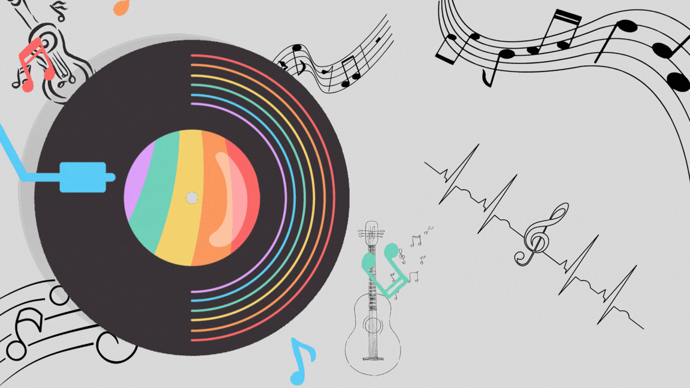

Going out tonight, changes into something red
Her mother doesn't like that kind of dress
Everything she never had, she's showing off
Driving too fast, moon is breaking through her hair
She's heading for something that she won't forget
Having no regrets is all she really wants
We're only getting older, baby
And I've been thinking about it lately
Does it ever drive you crazy
Just how fast the night changes?